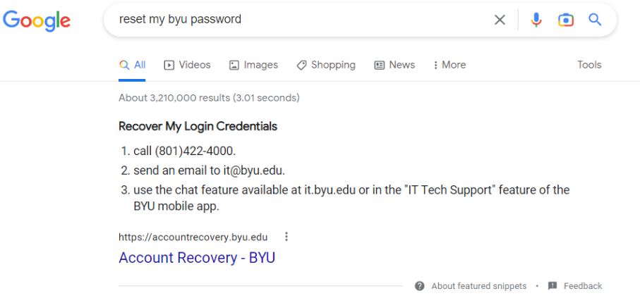
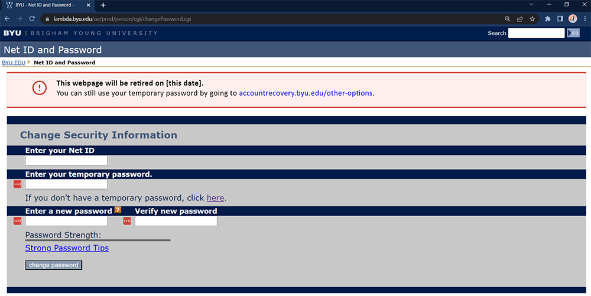
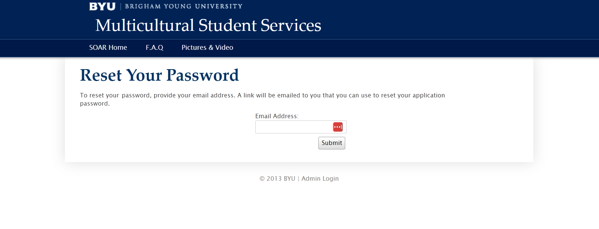
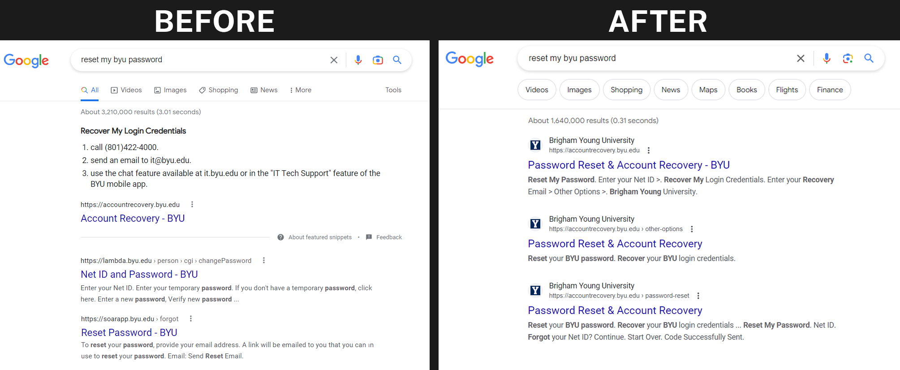

TLDR
Discovered that the SEO of the Account Recovery website was not ranking the site high enough on search engines
Researched and identified how to improve the site SEO through HTML and key terms
Researched into two other offending websites that BYU owned that were old and ranking higher than the account recovery website and should not have
Worked with engineers to improve the SEP and key terms of the Account Recovery website
Worked with engineers to migrate the temporary password feature from an old website to the new Account Recovery website where it belonged
Retired and removed two older websites that caused search engines and users confusion about resetting their BYU password
Worked with several site owners and stakeholders with diplomacy and tactfulness to retire older sites that were causing search engine issues for BYU
Proved through metrics and data that the SEO of the Account Recovery website improved after all the changes were made and older sites were retired and removed
The Project
This project was heavier in research, SEO, and managing multiple departments who consider themselves owners of the content.
The first issue we discovered was that at the bottom of the Account Recovery website on every page, there was a help section that gave users three help options. The first being the phone number to the BYU helpdesk. BYU wants users to have that help, but they didn't want Google to index that text as a "snippet" and put it at the very top of Google searches for "reset my byu password" (see image below). That meant that users would search to reset their BYU password, and as far as they thought, BYU was telling them to call that number. So, the number of helpdesk calls for password reset was very high. I changed the site so that there was a link at the top of every page that says, "I Need Help". If users clicked that link, they would be taken to a single page that had those three help options, like the phone number. This made it so that Google no longer indexed that help text on every page of the site, deemed it important, and made it a "snippet" at the very top of search engine results. Thus, increasing the number of calls the helpdesk would get.
The Account Recovery website was missing a feature that existed on a much older BYU webpage (see image below). This was the ability to create a temporary password in order to recover an account. This older webpage to create a temporary password had been in existence for more than 15 years at BYU. For that reason, the page was indexed by all search engines and trusted. When a user would search the term, “reset my byu password” this legacy BYU temporary password page would show as a top three result.
Along with the legacy temporary password page, another BYU page that belonged to the Multicultural Center Department also listed as a top three result for “reset my byu password” in search engines. But this page was also a legacy page that pertained to resetting your password for a SOAR application. (see image below)
So, a user would search terms similar to, “reset my byu password” and they would get results that had two pages that the search engine listed titles as “reset your byu password”, but two of those sites were incorrect listings. This was not the fault of the search engine, but the fault of BYU not retiring older pages and using vague terms on their page headings and HTML such as “Reset your password”. When those two erroneous pages were not meant to reset your password at all. Often those tow pages would show up as top one and two results and the true Account Recovery webpage were a user CAN reset their password would be a lower result in search engines.
Obviously, this was a big problem for BYU and for users searching to rest their BYU passwords.
I had to approach this project on two different fronts.
1) Update the current Account recovery website’s SEO and design so that the site would rank highest in search results for “reset my byu password, and so that the site could create temporary passwords in order to retire the older page.
2) Contact the owners of the two older pages that were causing bad search engine results and use diplomacy and people skills to explain the issue and ask if they are willing to update their pages content or retire the old page all together.
After a lot of hard work and diligence. I was able to accomplish every task and goal. The older sites that were causing bad search engine results were retired and removed so search engines no longer associated them with search terms related to resetting your BYU password. I worked with project managers and engineers to improve the HTML of the Account Recovery website so the SEO would improve, and the site would now rank highest when users searched to reset their BYU password. I also worked with engineers to transfer the temporary password feature that existed on the legacy website to the Account Recovery website. This would allow many users to still be able to create temporary passwords for their account recovery needs, while at the same time retiring an older site that was causing confusion and didn’t match BYU’s new website branding guides.
The SEO of the Account Recovery website improved very quickly. And the safety and security of the temporary password feature was improved by migrating it to the new website and removing the older webpage where that feature was hosted.
